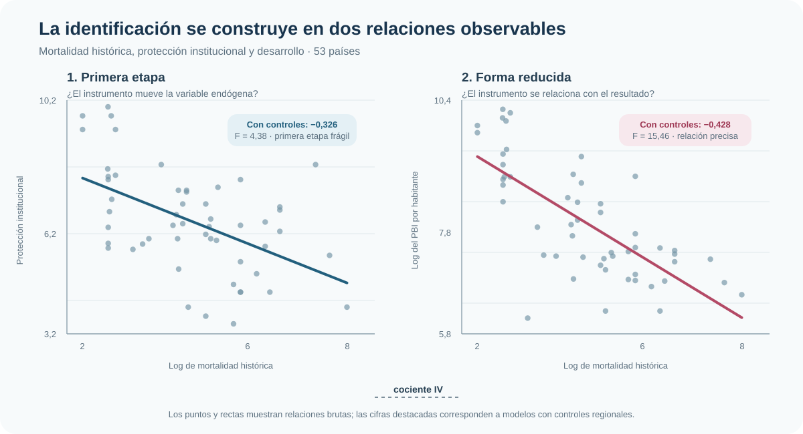
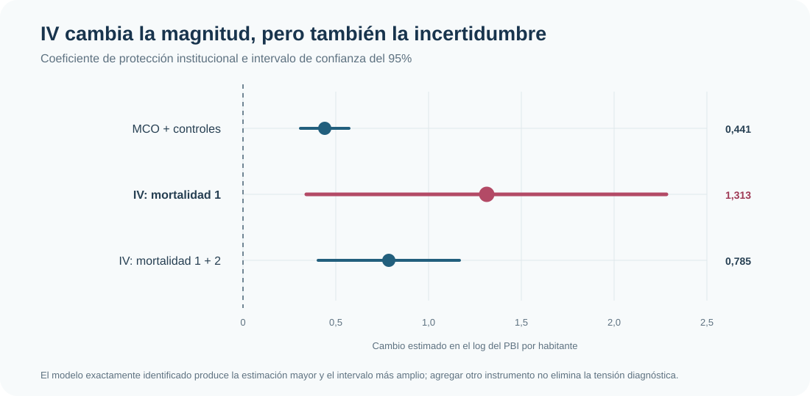

Instituciones y desarrollo: qué puede —y qué no puede— resolver una variable instrumental
Mortalidad histórica, primera etapa frágil y límites de la identificación por variables instrumentales
Instrumentar no equivale a resolver la endogeneidad
La mortalidad histórica permite aislar una fuente distinta de variación institucional. Pero una primera etapa frágil, mayor incertidumbre y tensiones de sobreidentificación impiden convertir 2SLS en una garantía automática de credibilidad.
Muestra común
53 países
Corte transversal
Primera etapa
F = 4,38
Instrumento débil o borderline
IV: un instrumento
1,313
EE robusto = 0,495
Sobreidentificación
p = 0,049
Tensión con dos instrumentos
Pregunta
¿Cuánto cambia la relación estimada entre protección institucional y desarrollo económico cuando la calidad de las instituciones se trata como endógena y se utiliza mortalidad histórica como instrumento?
El caso separa dos preguntas que a menudo se confunden: si el instrumento mueve la variable endógena y si es razonable sostener que afecta el resultado solamente a través de ella. La primera puede estudiarse en los datos; la segunda exige un argumento sustantivo de exclusión.
Aplicación y problema de endogeneidad
La base reúne 53 países. El resultado es el logaritmo del PBI por habitante en 1995 y la variable endógena es un indicador de protección institucional —mayores valores representan menor riesgo de expropiación—. Los modelos incluyen controles regionales para Asia, América y Oceanía.
Una regresión directa puede mezclar la relación institucional con geografía, historia, medición, persistencia o causalidad inversa. La estrategia instrumental utiliza el logaritmo de la mortalidad histórica como fuente de variación para la protección institucional.
Esta estrategia requiere dos condiciones diferentes:
- Relevancia: la mortalidad histórica debe estar asociada con las instituciones actuales.
- Exclusión: condicional en los controles, no debe afectar el desarrollo actual por canales distintos de las instituciones.
Primera etapa y forma reducida
La primera etapa relaciona mortalidad histórica con protección institucional. La forma reducida relaciona ese mismo instrumento con el resultado. Ambas pendientes son negativas: mayor mortalidad histórica aparece asociada con instituciones menos protectoras y con menor desarrollo contemporáneo.

Con controles regionales, la pendiente de la primera etapa es −0,326, con F = 4,38 y un R² parcial de 0,077. Existe una relación empírica, pero es débil o borderline. La forma reducida es más precisa: su pendiente es −0,428, con F = 15,46.
En el caso exactamente identificado, el cociente entre forma reducida y primera etapa recupera el coeficiente IV:
\[ \widehat\beta_{IV}=\frac{-0{,}4278}{-0{,}3259}=1{,}3128. \]
La identidad organiza la lógica del estimador, pero no resuelve por sí misma la validez del instrumento ni su debilidad.
MCO frente a 2SLS
MCO con controles regionales produce un coeficiente de 0,441 para protección institucional, con error estándar robusto de 0,066. Al utilizar la variación inducida por la primera medida de mortalidad histórica, 2SLS eleva el coeficiente a 1,313, con error estándar robusto de 0,495 e IC95% aproximado de [0,342; 2,284].

El aumento del coeficiente no debe presentarse como una corrección automática de MCO. 2SLS utiliza una porción mucho más estrecha de la variación institucional y esa porción está débilmente explicada por el instrumento. La magnitud mayor viene acompañada por una pérdida sustancial de precisión.
La prueba de endogeneidad rechaza la exogeneidad de la protección institucional —p = 0,006 en el test robusto de score—. Esto justifica tomar en serio la diferencia entre MCO e IV, pero no demuestra que la restricción de exclusión sea correcta.
Fragilidad instrumental
El estadístico Kleibergen–Paap de 4,38 y el test de subidentificación con p = 0,051 ubican al modelo exactamente identificado en una zona frágil. Con una primera etapa débil:
- el coeficiente IV puede ser inestable;
- los intervalos convencionales pueden ofrecer una imagen incompleta de la incertidumbre;
- una estimación alejada de MCO no es, por sí sola, evidencia de mayor credibilidad.
El bloque FWL-IV confirma visualmente la mecánica: después de retirar los controles regionales, la pendiente entre desarrollo residualizado y protección institucional predicha por el instrumento reproduce 1,313. Esa regresión auxiliar explica la geometría de 2SLS, pero su error estándar manual no es la inferencia IV correcta. Por eso queda como apoyo conceptual y no como resultado adicional.
Un segundo instrumento: más relevancia, nueva tensión
Al agregar una segunda medida de mortalidad histórica, el coeficiente IV baja a 0,785 y su error estándar robusto a 0,195. La primera etapa conjunta mejora: el R² parcial sube a 0,213 y el estadístico Kleibergen–Paap a 7,27. Aun así, la preocupación por debilidad no desaparece.
| Especificación | Coeficiente institucional | Diagnóstico decisivo | Lectura |
|---|---|---|---|
| MCO + controles | 0,441 | No trata la endogeneidad | Asociación parcial precisa |
| IV: mortalidad 1 | 1,313 | KP F = 4,38 | Identificación débil o borderline |
| IV: mortalidad 1 + 2 | 0,785 | KP F = 7,27; Hansen p = 0,049 | Mejora relevancia, pero aparece tensión de exclusión conjunta |
El test de Hansen rechaza las restricciones de sobreidentificación al 5%. No identifica cuál instrumento sería problemático ni prueba por sí solo un canal alternativo, pero advierte que las dos restricciones de exclusión no encajan cómodamente en conjunto. Agregar instrumentos puede ganar relevancia y, al mismo tiempo, exigir supuestos adicionales difíciles de defender.
Alcance
Esta aplicación está vinculada a la discusión sobre instituciones y desarrollo, pero no constituye una réplica completa de esa literatura ni resuelve sus controversias históricas. La mortalidad es un instrumento continuo y la estimación debe interpretarse dentro del modelo lineal especificado y de la variación que ese instrumento genera en esta muestra.
La evidencia muestra asociaciones consistentes con la lógica instrumental, pero la primera etapa frágil y la tensión de sobreidentificación impiden presentar los coeficientes como una demostración causal concluyente.
Conclusión
Variables instrumentales cambia la fuente de variación utilizada para estimar la relación entre instituciones y desarrollo. En esta muestra, 2SLS produce coeficientes mayores que MCO, pero también revela mucha más incertidumbre y sensibilidad al conjunto de instrumentos.
La lectura dominante es metodológica: IV no resuelve automáticamente la endogeneidad. Una estrategia defendible necesita relevancia suficiente, una exclusión sustantivamente creíble y una inferencia acorde con la fragilidad de la primera etapa. El comando estima el modelo; los diagnósticos y el argumento económico determinan cuánto puede sostenerse con él.